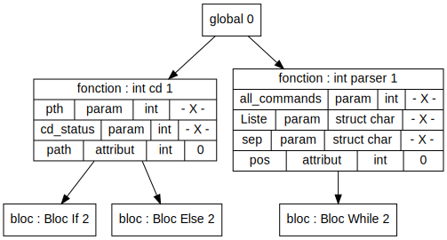

Test : Test_Complet/test5.exp
Code
int cd(int pth, int cd_status){
int path ;
struct cwd_struct * cwd ;
strcpy(path,pth);
if(pth_0 != 0) {
// true for the dir in cwd
getcwd(cwd, sizeof(struct cwd_struct));
strcat(cwd,0);
strcat(cwd,path);
cd_status = chdir(cwd); //cd_status prend les valeurs 0 si okay, -1 sinon
}
else{
//true for dir w.r.t. /
cd_status = chdir(pth);
}
}
int parser(int all_commands, struct char* Liste, struct char * sep) {
int pos ;
struct char *command_split ;
pos = 0 ; // Position => sert à parcourir Liste
// séparation des commandes
command_split = strtok(all_commands, sep);
while(command_split != NULL) {
Liste_pos = command_split ;
command_split = strtok(NULL, sep);
pos = pos + 1 ;
}
Liste_(pos-1) = strtok(Liste_(pos-1), 0) ;
Liste_pos = NULL ;
}
Erreur
Erreur struct : struct cwd_struct non definie
Erreur fonction : strcpy non definie
Erreur variable : pth_0 non definie
Erreur variable : cwd non definie
Erreur struct : struct cwd_struct non definie
Erreur fonction : getcwd non definie
Erreur variable : cwd non definie
Erreur fonction : strcat non definie
Erreur variable : cwd non definie
Erreur fonction : strcat non definie
Erreur variable : cwd non definie
Erreur fonction : chdir non definie
Erreur fonction : chdir non definie
Erreur fonction : cd ne renvoie pas d'element dans tous les cas
Erreur struct : struct char non definie
Erreur struct : struct char non definie
Erreur struct : struct char non definie
Erreur variable : command_split non definie
Erreur fonction : strtok non definie
Erreur variable : command_split non definie
Erreur variable : NULL non definie
Erreur variable : Liste_pos non definie
Erreur variable : command_split non definie
Erreur variable : command_split non definie
Erreur variable : NULL non definie
Erreur fonction : strtok non definie
Erreur : affectation impossible
Erreur fonction : Liste_ non definie
Erreur fonction : Liste_ non definie
Erreur fonction : strtok non definie
Erreur variable : Liste_pos non definie
Erreur variable : NULL non definie
Erreur fonction : parser ne renvoie pas d'element dans tous les cas
Erreur fonction : main non definie
AST
TDS
